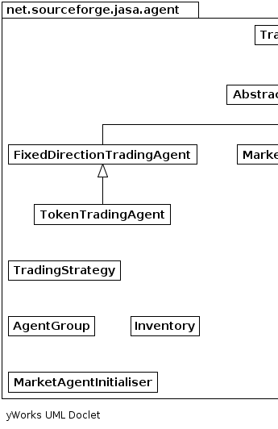
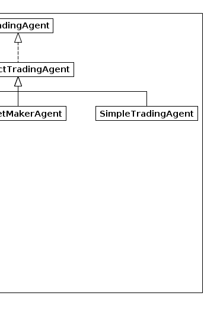

|
|||||||||
| PREV PACKAGE NEXT PACKAGE | FRAMES NO FRAMES | ||||||||
See:
Description
| Interface Summary | |
|---|---|
| TradingAgent | Classes implementing this interface can trade in round-robin auctions, as implemented by the RoundRobinAuction class. |
| TradingStrategy | Classes implementing this interface define trading strategies for round-robin traders. |
| Class Summary | |
|---|---|
| AbstractTradingAgent | An abstract class representing a simple agent trading in a round-robin market. |
| AgentGroup | A class representing an arbitrary grouping of agents. |
| FixedDirectionTradingAgent | |
| Inventory | Class to track inventories of agents. |
| MarketAgentInitialiser | |
| MarketMakerAgent | |
| SimpleTradingAgent | Agents of this type have a fixed volume, and they trade units equal to their volume in each round of the market. |
| TokenTradingAgent | Agents of this type have a finite trade entitlement, which determines how many units or "tokens" they are able to trade in a given trading period. |
Classes defining trading agents and strategies
|  |  |
|
|||||||||
| PREV PACKAGE NEXT PACKAGE | FRAMES NO FRAMES | ||||||||